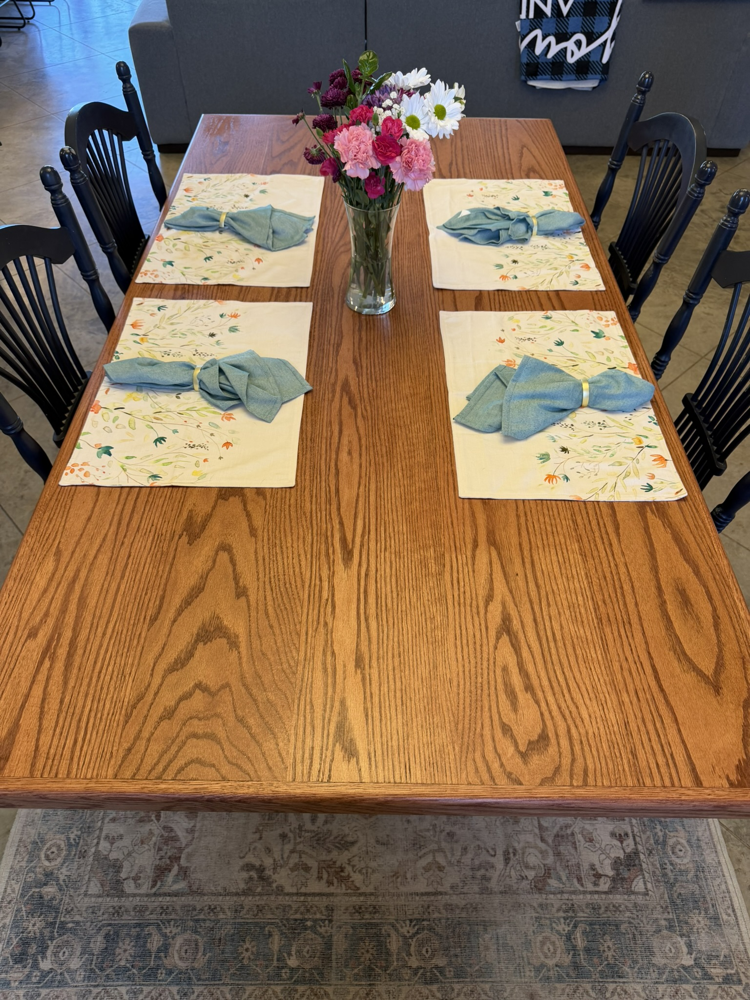
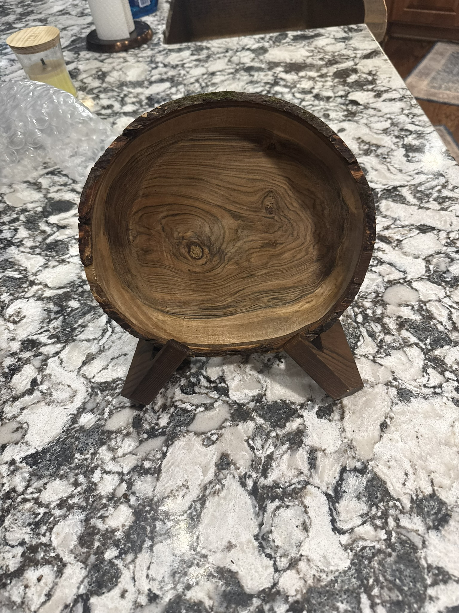
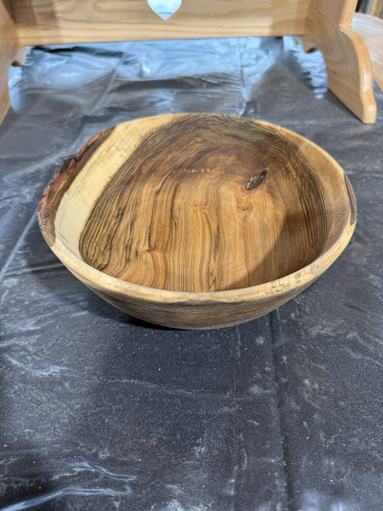

The Craftsman
Michael Cedoz
Building a craft, one piece at a time — from a red barn in Mount Vernon, Ohio.
Building a craft, one piece at a time — from a red barn in Mount Vernon, Ohio.
Based in Mount Vernon, Ohio, Michael brings a meticulous eye and steady hand to every piece he creates. What started as a passion for working with wood has grown into Redbarn Wood Turning — a workshop dedicated to crafting pieces that are as functional as they are beautiful.
From hand-turned bowls that highlight the natural grain of the wood to finely crafted pens and larger custom furniture, each piece is shaped with care, patience, and respect for the material.
Most of the wood comes from right here in Knox County — fallen trees from storms, trees taken down for construction, logs that would otherwise end up as firewood. There's something satisfying about giving a 100-year-old oak a second life as a kitchen table.
Every project begins with a conversation and ends with something you'll treasure.
Each piece starts with hand-selecting the right wood — considering grain, species, and character to match the vision.
Using a combination of traditional turning techniques and modern tools, the raw wood takes shape on the lathe or workbench.
Multiple rounds of sanding, finishing, and hand-polishing bring out the wood's natural beauty — ready to be enjoyed for years.
Stories about the work, the craft, and the wood that shapes it all.

People ask me all the time: what makes one bowl different from another? The answer almost always starts with the wood.

A few months back I got a call from a customer in Michigan. He wanted a kitchen table — something big enough for the whole family.

One of the most common questions I get after delivering a piece is: how do I take care of this? The good news is simple.

If you've found your way to this site, you probably have at least a rough idea of what woodturning is. But I'm surprised how often people don't really know.